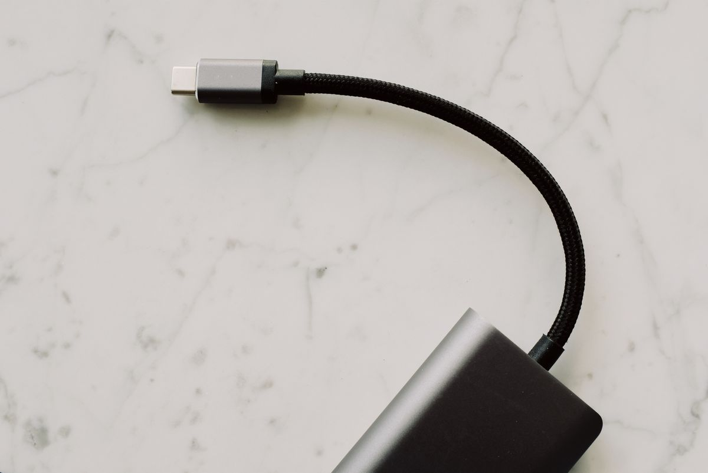
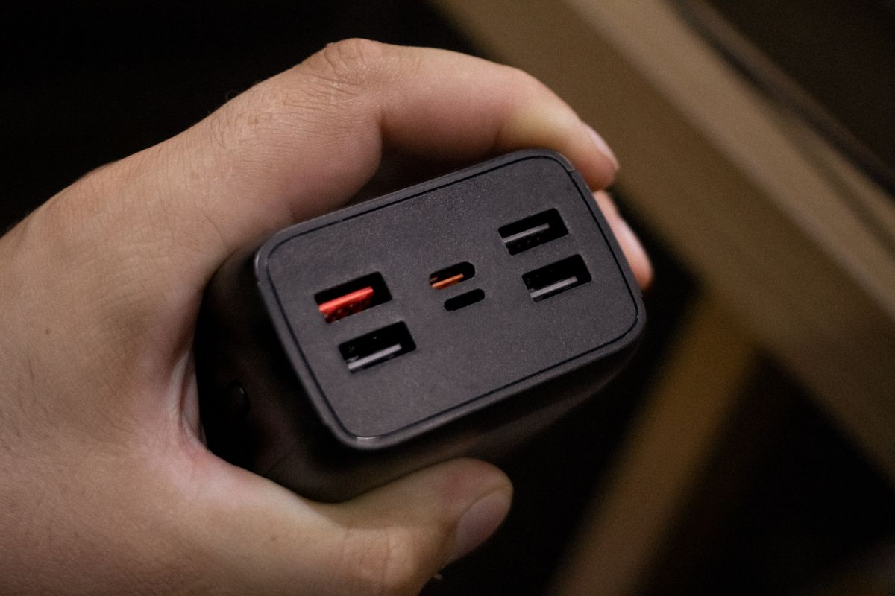
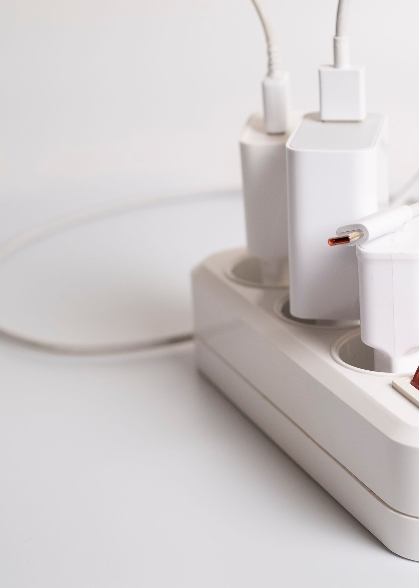
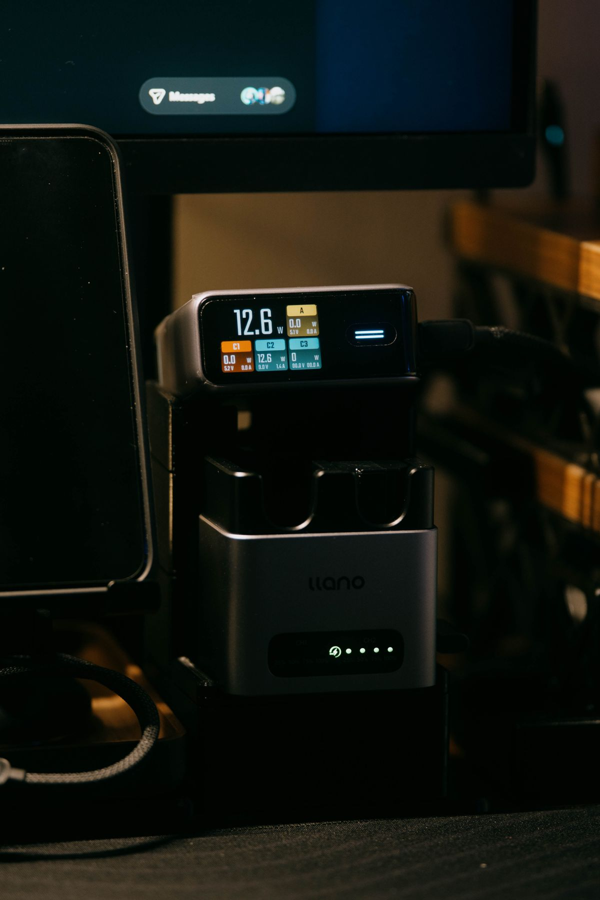

GaN Charger คืออะไร? ทำไมที่ชาร์จรุ่นใหม่ถึงเล็กลงแต่แรงขึ้น คู่มือเลือกซื้อ 2026
GaN (แกลเลียมไนไตรด์) คืออะไร ทำไมที่ชาร์จ GaN ถึงเล็กลงครึ่งหนึ่งแต่แรงเท่าเดิม รวม 4 ประเภทที่น่าสนใจ พร้อมเกณฑ์เลือกซื้อให้เหมาะกับโต๊ะทำงาน ซื้อผ่าน Shopee
อัปเดต กรกฎาคม 2026
ถ้าช่วงนี้คุณเคยเห็นที่ชาร์จตัวจิ๋วที่ชาร์จโน้ตบุ๊กได้ทั้งเครื่อง หรืออะแดปเตอร์ตัวเดียวที่เสียบชาร์จมือถือ แท็บเล็ต และแล็ปท็อปพร้อมกัน นั่นคือผลงานของเทคโนโลยีที่เรียกว่า GaN (แกลเลียมไนไตรด์) ที่กำลังเปลี่ยนโฉมที่ชาร์จทั้งวงการ บนโต๊ะทำงานที่มีอุปกรณ์หลายชิ้น GaN Charger ตัวเดียวช่วยลดจำนวนอะแดปเตอร์ ลดความรกของสายไฟ และเพิ่มพื้นที่โต๊ะให้โล่งขึ้นอย่างเห็นได้ชัด
บทความนี้จะอธิบายว่า GaN คืออะไร ทำไมถึงดีกว่าที่ชาร์จแบบเดิม และมีเกณฑ์อะไรบ้างที่ควรดูก่อนเลือกซื้อมาใช้บนโต๊ะทำงาน
GaN คืออะไร แล้วดีกว่าที่ชาร์จแบบเดิมตรงไหน?
GaN ย่อมาจาก Gallium Nitride (แกลเลียมไนไตรด์) เป็นวัสดุเซมิคอนดักเตอร์ที่นำมาใช้แทนซิลิคอน (Silicon) ซึ่งเป็นวัสดุดั้งเดิมในที่ชาร์จทั่วไป จุดเด่นของ GaN คือนำไฟฟ้าได้ดีกว่า ทนความร้อนได้สูงกว่า และสูญเสียพลังงานเป็นความร้อนน้อยกว่า
ผลที่ตามมาคือ ที่ชาร์จ GaN สามารถทำงานที่กำลังไฟสูงได้โดยไม่ร้อนจัด และเนื่องจากจัดการความร้อนได้ดี จึงย่อขนาดชิ้นส่วนภายในให้เล็กลงได้มาก เราจึงได้ที่ชาร์จที่ เล็กลงราวครึ่งหนึ่ง แต่ให้กำลังไฟเท่าเดิมหรือมากกว่า เมื่อเทียบกับอะแดปเตอร์ซิลิคอนรุ่นเก่าที่ทั้งใหญ่และหนัก นี่คือเหตุผลที่ที่ชาร์จโน้ตบุ๊ก 65W ในปัจจุบันมีขนาดเล็กพอ ๆ กับอะแดปเตอร์มือถือสมัยก่อน
ประเภทและรุ่นที่น่าสนใจ พร้อมเหตุผลที่ควรพิจารณา

1. GaN Charger พอร์ตเดียว 65W (เหมาะกับคนใช้โน้ตบุ๊กเป็นหลัก)
ที่ชาร์จ GaN 65W พอร์ต USB-C เดียว เป็นตัวเลือกที่กะทัดรัดและแรงพอชาร์จโน้ตบุ๊กส่วนใหญ่ได้เต็มสปีด เหมาะกับคนที่พกอุปกรณ์ไม่เยอะ หรืออยากได้ตัวสำรองไว้ในกระเป๋า เล็กเบาจนแทบไม่รู้สึกว่าพกมา แต่ชาร์จได้ทั้งมือถือและแล็ปท็อปในตัวเดียว

2. GaN Charger หลายพอร์ต 100W ขึ้นไป (เหมาะกับโต๊ะที่มีอุปกรณ์หลายชิ้น)
ที่ชาร์จ GaN 100W 3-4 พอร์ต คือพระเอกของโต๊ะทำงานที่มีทั้งโน้ตบุ๊ก มือถือ หูฟัง และแท็บเล็ต เสียบตัวเดียวชาร์จได้พร้อมกันหลายเครื่อง ระบบจะจัดสรรกำลังไฟให้แต่ละพอร์ตอัตโนมัติ ช่วยลดจำนวนอะแดปเตอร์บนโต๊ะจากหลายตัวเหลือแค่ตัวเดียว โต๊ะโล่งและสายไฟเป็นระเบียบขึ้นมาก

3. GaN Charger แบบมีปลั๊กพับเก็บได้ (เหมาะกับคนเดินทางบ่อย)
ที่ชาร์จ GaN พับขาปลั๊กได้พร้อมสาย USB-C ออกแบบมาเพื่อการพกพา ขาปลั๊กพับเก็บได้ไม่เกี่ยวของในกระเป๋า เหมาะกับคนที่ทำงานนอกสถานที่ หรือสลับระหว่างบ้านกับออฟฟิศบ่อย ได้ความแรงระดับชาร์จโน้ตบุ๊กในขนาดที่พกง่าย

4. GaN Charger ปลั๊กพ่วงในตัว (เหมาะกับโต๊ะทำงานถาวร)
แท่นชาร์จ GaN แบบตั้งโต๊ะพร้อมหลายพอร์ต เป็นรุ่นที่ออกแบบให้วางประจำบนโต๊ะ มีทั้งพอร์ต USB-C และ USB-A มาพร้อมสายไฟยาว จัดวางในตำแหน่งที่หยิบใช้สะดวก เหมาะกับคนที่ตั้งโต๊ะทำงานถาวรและอยากได้จุดชาร์จรวมศูนย์ที่เรียบร้อย
เกณฑ์การเลือกซื้อ GaN Charger ให้เหมาะกับการใช้งาน
กำลังไฟรวม (Total Wattage) ดูก่อนว่าคุณต้องชาร์จอะไรบ้าง โน้ตบุ๊กบางทำงานเบา ๆ ใช้ 30-45W ก็พอ แต่โน้ตบุ๊กประสิทธิภาพสูงหรือ MacBook Pro อาจต้องการ 96-100W ถ้าใช้หลายเครื่องพร้อมกัน ควรเผื่อกำลังไฟรวมให้มากพอสำหรับทุกอุปกรณ์
จำนวนและชนิดพอร์ต พอร์ต USB-C รองรับ Power Delivery (PD) เป็นมาตรฐานหลักในปัจจุบัน ถ้ายังมีอุปกรณ์เก่าที่ใช้ USB-A อยู่ ให้เลือกรุ่นที่มีทั้งสองแบบ และดูว่ามีพอร์ตพอกับจำนวนอุปกรณ์ที่ต้องชาร์จพร้อมกัน
การจัดสรรกำลังไฟเมื่อเสียบหลายเครื่อง จุดที่หลายคนพลาดคือ ที่ชาร์จ 100W หลายพอร์ต ไม่ได้จ่าย 100W ให้ทุกพอร์ตพร้อมกัน แต่จะแบ่งกำลังไฟ อ่านสเปกให้ดีว่าเมื่อเสียบเต็มทุกพอร์ตแล้ว โน้ตบุ๊กยังได้กำลังไฟเพียงพอหรือไม่
มาตรฐานความปลอดภัย เลือกยี่ห้อที่น่าเชื่อถือและมีระบบป้องกันไฟเกิน ป้องกันความร้อนเกิน และป้องกันไฟฟ้าลัดวงจร เพราะที่ชาร์จเกี่ยวข้องกับความปลอดภัยของทั้งอุปกรณ์ราคาแพงและตัวคุณเอง
รองรับมาตรฐานการชาร์จเร็ว ตรวจสอบว่ารองรับ USB PD และ PPS หากคุณใช้มือถือที่รองรับชาร์จเร็ว จะช่วยให้ชาร์จได้เต็มประสิทธิภาพของเครื่อง
สรุป: GaN Charger คุ้มค่าที่จะเปลี่ยนมาใช้ไหม?
สำหรับคนที่มีอุปกรณ์หลายชิ้นบนโต๊ะ GaN Charger คือการอัปเกรดที่คุ้มค่าอย่างชัดเจน มันช่วยรวมอะแดปเตอร์หลายตัวให้เหลือตัวเดียว ลดความรกของสายไฟ ประหยัดพื้นที่ปลั๊ก และให้ความเร็วในการชาร์จที่ดีขึ้น ทั้งยังพกพาสะดวกกว่าที่ชาร์จรุ่นเก่ามาก
ถ้าคุณใช้แค่โน้ตบุ๊กเครื่องเดียว รุ่นพอร์ตเดียว 65W ก็เพียงพอและคุ้มค่า แต่ถ้าโต๊ะทำงานของคุณเต็มไปด้วยอุปกรณ์ การลงทุนกับรุ่นหลายพอร์ต 100W จะช่วยจัดระเบียบและตอบโจทย์ในระยะยาวมากกว่า เลือกกำลังไฟและจำนวนพอร์ตให้เหมาะกับอุปกรณ์ที่คุณมี แล้วโต๊ะทำงานจะทั้งเป็นระเบียบและชาร์จไวขึ้นในคราวเดียว
บทความนี้มีลิงก์ affiliate เมื่อคุณซื้อผ่านลิงก์ เราอาจได้รับค่าคอมมิชชั่นโดยที่คุณไม่ต้องจ่ายเพิ่ม